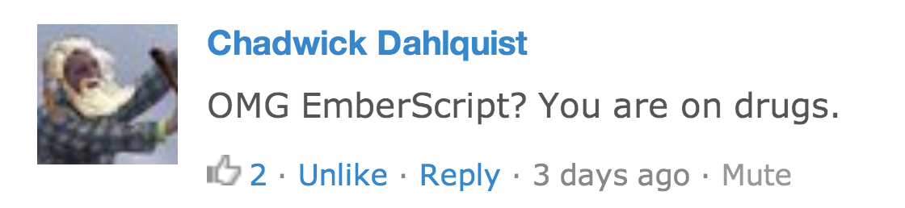

Focus on metal and runtime
Motivation
- Tedious (getters/setters, computed property dependencies)
- CoffeeScript impedance mismatch (classes, indentation)
First-class language support
Object Model
TODO: example
Backbone with EmberScript
Use alongside js/coffeescript
Similar principles to CoffeeScript
Haml/sass/coffeescript analogy
Emblem.js